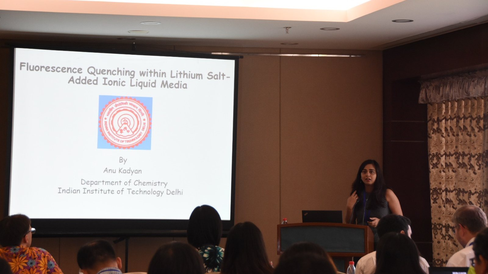
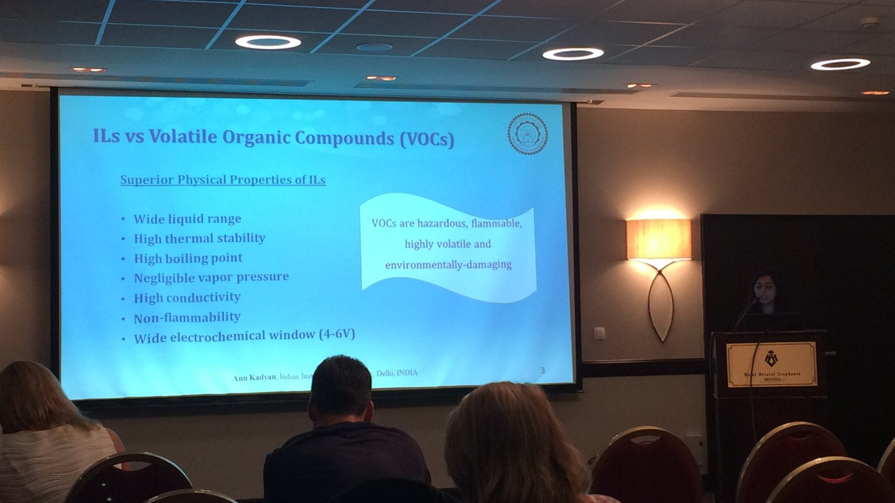

2026–now
Techno-economics of battery storage
Climate Knowledge Initiative, Columbia Business School
Techno-economic analysis of battery storage systems: what they cost, what they earn, and what it takes for them to pencil out.
My research covers the economics of energy storage, the supply chains behind clean electrification, and how grids absorb new loads like electric fleets and data centers. It rests on a decade of laboratory work in chemistry.
2026–now
Climate Knowledge Initiative, Columbia Business School
Techno-economic analysis of battery storage systems: what they cost, what they earn, and what it takes for them to pencil out.
2026–now
Dataset paper in preparation for Scientific Data · Lead author · Climate Knowledge Initiative
A company-level dataset of the firms behind clean industrial electrification, from batteries to electric arc furnaces, recording their size, revenue, workforce and geography to show how large, dense and interconnected these supply chains already are.
2026
U.S. Electric School Bus Initiative, World Resources Institute
Managed charging, vehicle-to-grid and virtual power plant programs for school bus fleets in Colorado, California, Virginia and Connecticut, plus second-life uses for retired bus batteries.
2026
Landscape assessment · World Resources Institute
How data centers can catalyze battery circularity in the U.S. by putting retired EV packs to work as stationary storage. The research shaped a closed-door stakeholder session at Climate Week NYC 2026.
2026
SIPA CEE Practicum and Hawaiʻi State Energy Office
Project finance modeling and policy design for Hawaiʻi's geothermal resources. A follow-on report to the State Legislature is forthcoming.
From my PhD on green solvents at IIT Delhi.
May 2019
Oral presentation · 8th International Congress on Ionic Liquids (COIL-8) · Friendship Palace, Beijing, China
Presented my research on how lithium salts, the same salts used in battery electrolytes, change molecular interactions inside ionic liquids.

Aug 2017
Oral presentation, with Siddharth Pandey · Showcasing the Contemporary Approaches in Analytical & Bioanalytical Techniques (8th Annual Congress on Analytical and Bioanalytical Techniques) · Brussels, Belgium, August 28–30
Presented how lithium salts affect fluorescence quenching and diffusion inside ionic liquids, which are non-flammable, non-volatile alternatives to hazardous organic solvents and candidate battery electrolytes.

PhD thesis · IIT Delhi · 2019
Spectroscopic investigation within ionic liquid and deep eutectic solvent based systems
Awarded Distinction in Doctoral Research · Supervisor: Prof. Siddharth Pandey